Integrating with VMware NSX
Switches running Cumulus Linux can integrate with VMware NSX to act as VTEP gateways. The VMware NSX controller provides consistent provisioning across virtual and physical server infrastructures.
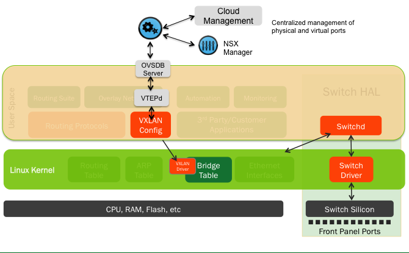
Contents
Getting Started
Before you integrate VXLANs with NSX, make sure you have the following components:
-
A switch (L2 gateway) with a Tomahawk, Trident II+ or Trident II chipset running Cumulus Linux
-
OVSDB server (ovsdb-server), included in Cumulus Linux
-
VTEPd (ovs-vtepd), included in Cumulus Linux
Integrating a VXLAN with NSX involves:
-
Bootstrapping the NSX Integration
-
Configuring the Transport Layer
-
Configuring the Logical Layer
-
Verifying the VXLAN Configuration
Caveats and Errata
-
As mentioned in Network Virtualization, the switches with the source and destination VTEPs cannot reside on the same subnet; there must be at least one layer 3 hop between the VXLAN source and destination.
-
There is no support for VXLAN routing in the Tomahawk, Trident II+ and Trident II chips; use a loopback interface or external router.
-
The ovsdb-server cannot select the loopback interface as the source IP address, causeing TOR registration to the controller to fail. To work around this issue, run:
cumulus@switch:~$ net add bgp redistribute connectedcumulus@switch:~$ net pendingcumulus@switch:~$ net commit -
Do not use 0 or 16777215 as the VNI ID, as they are reserved values under Cumulus Linux.
-
For more information about NSX, see the VMware NSX User Guide, version 4.0.0 or later.
Bootstrapping the NSX Integration
Before you start configuring the gateway service and logical switches and ports that comprise the VXLAN, you need to complete some steps to bootstrap the process. You need to do the bootstrapping just once, before you begin the integration.
Enabling the openvswitch-vtep Package
Before you start bootstrapping the integration, you need to enable the openvswitch-vtep package, as it is disabled by default in Cumulus Linux.
-
In /etc/default/openvswitch-vtep, change the START option from no to yes:
cumulus@switch$ cat /etc/default/openvswitch-vtep# This is a POSIX shell fragment -*- sh -*-# Start openvswitch at boot ? yes/noSTART=yes# FORCE_COREFILES: If'yes'then core files will be enabled.# FORCE_COREFILES=yes# BRCOMPAT: If'yes'and the openvswitch-brcompatpackageis installed, then# Linux bridge compatibility will be enabled.# BRCOMPAT=no -
Start the daemon:
cumulus@switch$ sudo systemctl start openvswitch-vtep.service
Using the Bootstrapping Script
A script is available so you can do the bootstrapping automatically. For information, read man vtep-bootstrap. The output of the script is displayed here:
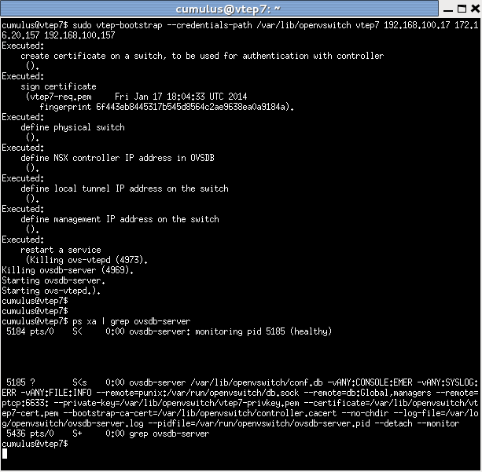
In the above example, the following information was passed to the vtep-bootstrap script:
-
--credentials-path /var/lib/openvswitch: Is the path to where the certificate and key pairs for authenticating with the NSX controller are stored.
-
vtep7: is the ID for the VTEP.
-
192.168.100.17: is the IP address of the NSX controller.
-
172.16.20.157: is the datapath IP address of the VTEP.
-
192.168.100.157: is the IP address of the management interface on the switch.
These IP addresses will be used throughout the rest of the examples below.
Manually Bootstrapping the NSX Integration
If you don’t use the script, then you must:
-
Initialize the OVS database instance
-
Generate a certificate and key pair for authentication by NSX
-
Configure a switch as a VTEP gateway
These steps are described next.
Generating the Credentials Certificate
First, in Cumulus Linux, you must generate a certificate that the NSX controller uses for authentication.
-
In a terminal session connected to the switch, run the following commands:
cumulus@switch:~$ sudo ovs-pki initCreating controllerca...Creating switchca...cumulus@switch:~$ sudo ovs-pki req+sign cumuluscumulus-req.pem Wed Oct2305:32:49UTC2013fingerprint b587c9fe36f09fb371750ab50c430485d33a174acumulus@switch:~$ ls -ltotal12-rw-r--r--1root root4028Oct2305:32cumulus-cert.pem-rw-------1root root1679Oct2305:32cumulus-privkey.pem-rw-r--r--1root root3585Oct2305:32cumulus-req.pem -
In /usr/share/openvswitch/scripts/ovs-ctl-vtep, make sure the lines containing private-key, certificate and bootstrap-ca-cert point to the correct files; bootstrap-ca-cert is obtained dynamically the first time the switch talks to the controller:
# Start ovsdb-server.set ovsdb-server"$DB_FILE"set"$@"-vANY:CONSOLE:EMER -vANY:SYSLOG:ERR -vANY:FILE:INFOset"$@"--remote=punix:"$DB_SOCK"set"$@"--remote=db:Global,managersset"$@"--remote=ptcp:6633:$LOCALIPset"$@"--private-key=/root/cumulus-privkey.pemset"$@"--certificate=/root/cumulus-cert.pemset"$@"--bootstrap-ca-cert=/root/controller.cacertIf files have been moved or regenerated, restart the OVSDB server and vtepd:
cumulus@switch:~$ sudo systemctl restart openvswitch-vtep.service -
Define the NSX controller cluster IP address in OVSDB. This causes the OVSDB server to start contacting the NSX controller:
cumulus@switch:~$ sudo vtep-ctl set-manager ssl:192.168.100.17:6632 -
Define the local IP address on the VTEP for VXLAN tunnel termination. First, find the physical switch name as recorded in OVSDB:
cumulus@switch:~$ sudo vtep-ctl list-psvtep7Then set the tunnel source IP address of the VTEP. This is the datapath address of the VTEP, which is typically an address on a loopback interface on the switch that is reachable from the underlying L3 network:
cumulus@switch:~$ sudo vtep-ctl set Physical_Switch vtep7 tunnel_ips=172.16.20.157
Once you finish generating the certificate, keep the terminal session active, as you need to paste the certificate into NSX Manager when you configure the VTEP gateway.
Configuring the Switch as a VTEP Gateway
After you create a certificate, connect to NSX Manager in a browser to configure a Cumulus Linux switch as a VTEP gateway. In this example, the IP address of the NSX manager is 192.168.100.12.
-
In NSX Manager, add a new gateway. Click the Network Components tab, then the Transport Layer category. Under Transport Node, click Add, then select Manually Enter All Fields. The Create Gateway wizard appears. 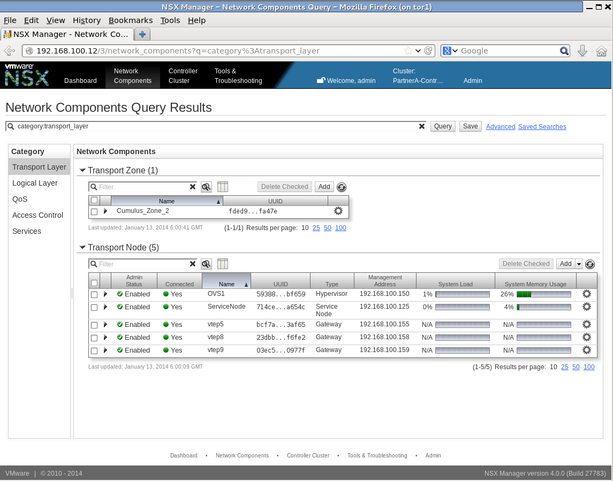
-
In the Create Gateway dialog, select Gateway for the Transport Node Type, then click Next.
-
In the Display Name field, give the gateway a name, then click Next.
-
Enable the VTEP service. Select the VTEP Enabled checkbox, then click Next.
-
From the terminal session connected to the switch where you generated the certificate, copy the certificate and paste it into the Security Certificate text field. Copy only the bottom portion, including the BEGIN CERTIFICATE and END CERTIFICATE lines. For example, copy all the highlighted text in the terminal: 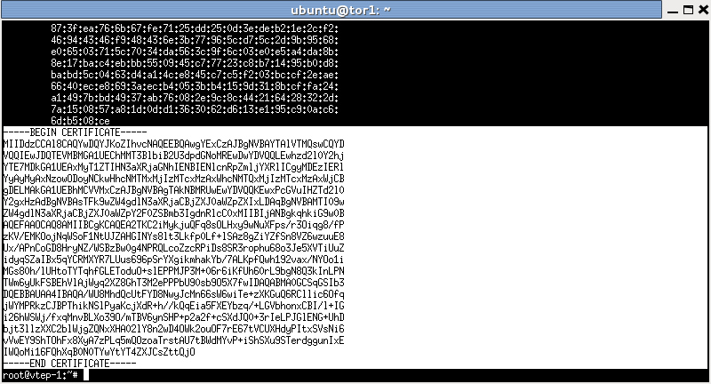
And paste it into NSX Manager: 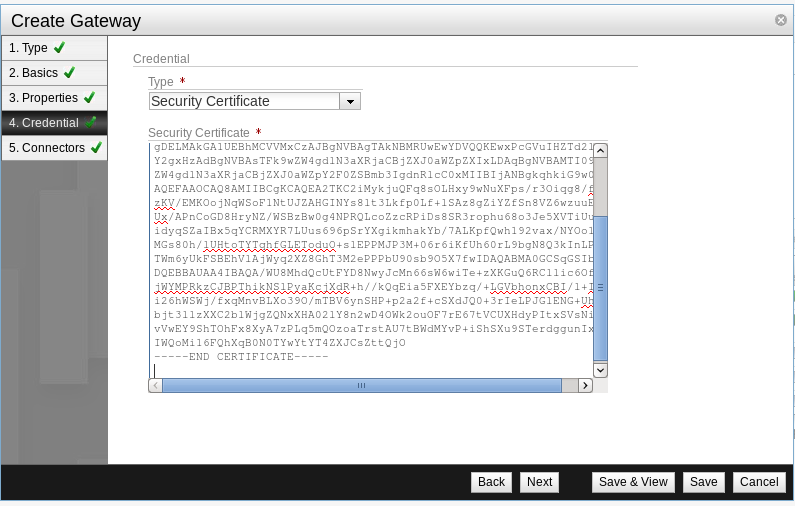
Then click Next.
-
In the Connectors dialog, click Add Connector to add a transport connector. This defines the tunnel endpoint that terminates the VXLAN tunnel and connects NSX to the physical gateway. You must choose a tunnel Transport Type of VXLAN. Choose an existing transport zone for the connector, or click Create to create a new transport zone.
-
Define the connector’s IP address (that is, the underlay IP address on the switch for tunnel termination).
-
Click OK to save the connector, then click Save to save the gateway.
Once communication is established between the switch and the controller, a controller.cacert file will be downloaded onto the switch.
Verify the controller and switch handshake is successful. In a terminal connected to the switch, run this command:
cumulus@switch:~$ sudo ovsdb-client dump -f list | grep -A 7 "Manager"Manager table_uuid : 505f32af-9acb-4182-a315-022e405aa479inactivity_probe : 30000is_connected : truemax_backoff : []other_config : {}status : {sec_since_connect="18223", sec_since_disconnect="18225", state=ACTIVE}target : "ssl:192.168.100.17:6632"Configuring the Transport Layer
After you finish bootstrapping the NSX integration, you need to configure the transport layer. For each host-facing switch port that is to be associated with a VXLAN instance, define a Gateway Service for the port.
-
In NSX Manager, add a new gateway service. Click the Network Components tab, then the Services category. Under Gateway Service, click Add. The Create Gateway Service wizard appears.
-
In the Create Gateway Service dialog, select VTEP L2 Gateway Service as the Gateway Service Type. 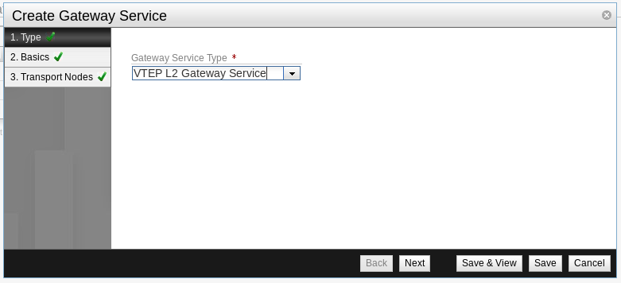
-
Give the service a Display Name to represent the VTEP in NSX.
-
Click Add Gateway to associate the service with the gateway you created earlier.
-
In the Transport Node field, choose the name of the gateway you created earlier.
-
In the Port ID field, choose the physical port on the gateway (for example, swp10) that will connect to a logical L2 segment and carry data traffic.
-
Click OK to save this gateway in the service, then click Save to save the gateway service.
The gateway service shows up as type VTEP L2 in NSX.
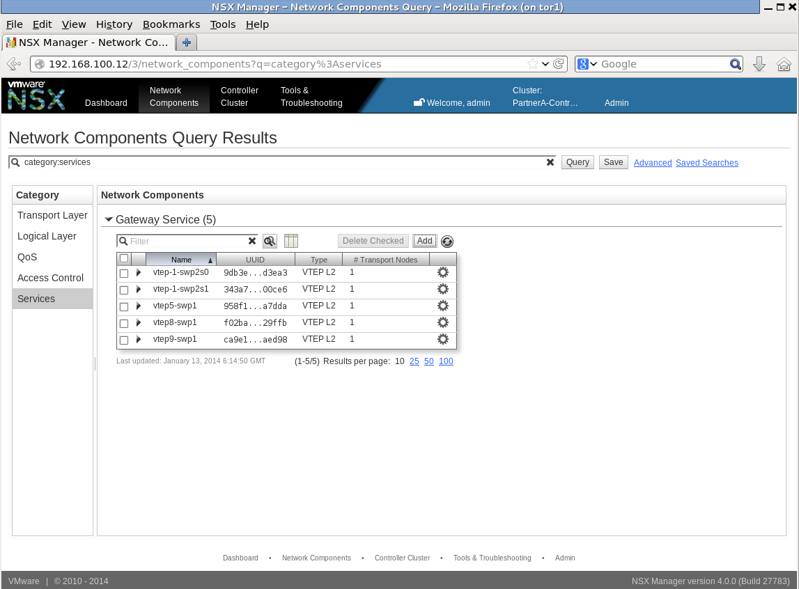
Next, you will configure the logical layer on NSX.
Configuring the Logical Layer
To complete the integration with NSX, you need to configure the logical layer, which requires defining a logical switch (the VXLAN instance) and all the logical ports needed.
Defining Logical Switches
To define the logical switch, do the following:
-
In NSX Manager, add a new logical switch. Click the Network Components tab, then the Logical Layer category. Under Logical Switch, click Add. The Create Logical Switch wizard appears.
-
In the Display Name field, enter a name for the logical switch, then click Next.
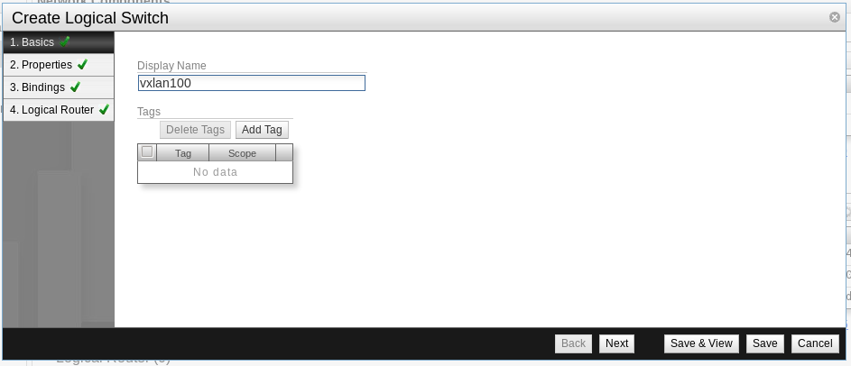 -
Under Replication Mode, select Service Nodes, then click Next.
-
Specify the transport zone bindings for the logical switch. Click Add Binding. The Create Transport Zone Binding dialog appears. 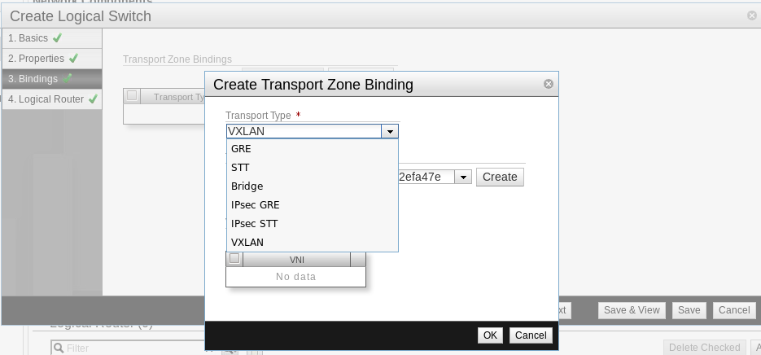
-
In the Transport Type list, select VXLAN, then click OK to add the binding to the logical switch. 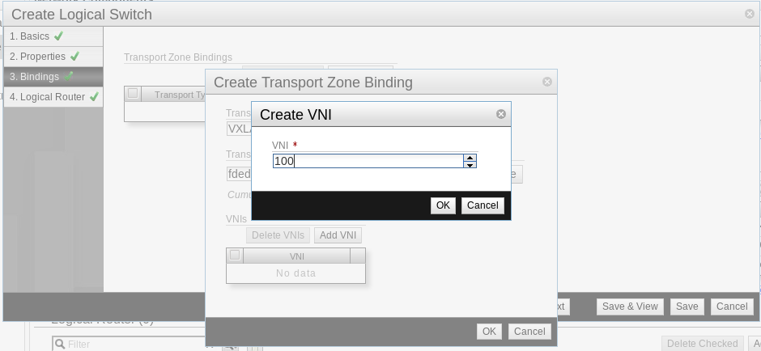
-
In the VNI field, assign the switch a VNI ID, then click OK.
Do not use 0 or 16777215 as the VNI ID, as they are reserved values under Cumulus Linux.
-
Click Save to save the logical switch configuration.
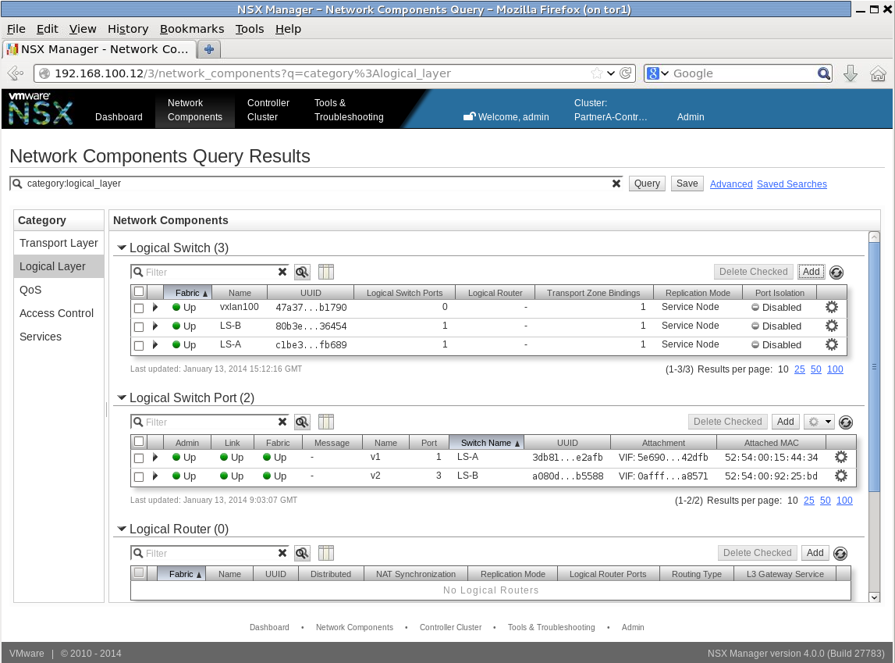
Defining Logical Switch Ports
As the final step, define the logical switch ports. They can be virtual machine VIF interfaces from a registered OVS, or a VTEP gateway service instance on this switch, as defined above in the Configuring the Transport Layer. A VLAN binding can be defined for each VTEP gateway service associated with the particular logical switch.
To define the logical switch ports, do the following:
-
In NSX Manager, add a new logical switch port. Click the Network Components tab, then the Logical Layer category. Under Logical Switch Port, click Add. The Create Logical Switch Port wizard appears.

-
In the Logical Switch UUID list, select the logical switch you created above, then click Create. 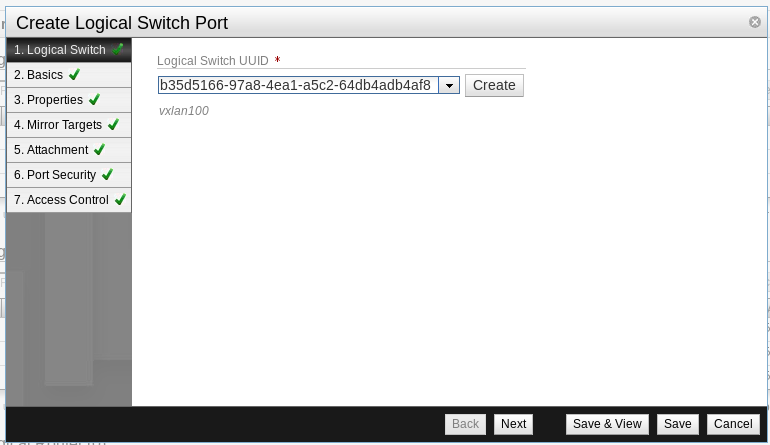
-
In the Display Name field, give the port a name that indicates it is the port that connects the gateway, then click Next.
-
In the Attachment Type list, select VTEP L2 Gateway.
-
In the VTEP L2 Gateway Service UUID list, choose the name of the gateway service you created earlier.
-
In the VLAN list, you can optionally choose a VLAN if you wish to connect only traffic on a specific VLAN of the physical network. Leave it blank to handle all traffic.
-
Click Save to save the logical switch port. Connectivity is established. Repeat this procedure for each logical switch port you want to define. 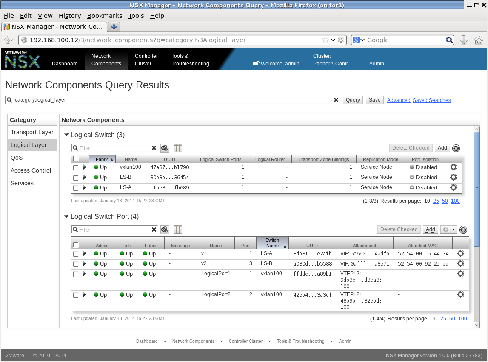
Verifying the VXLAN Configuration
Once configured, you can verify the VXLAN configuration using these Cumulus Linux commands in a terminal connected to the switch:
cumulus@switch1:~$ sudo ip –d link show vxln10071: vxln100: <BROADCAST,MULTICAST,UP,LOWER_UP> mtu 1500 qdisc noqueue master br-vxln100 state UNKNOWN mode DEFAULT link/ether d2:ca:78:bb:7c:9b brd ff:ff:ff:ff:ff:ff vxlan id 100 local 172.16.20.157 port 32768 61000 nolearning ageing 300 svcnode 172.16.21.125or
cumulus@switch1:~$ sudo bridge fdb show52:54:00:ae:2a:e0 dev vxln100 dst 172.16.21.150 self permanentd2:ca:78:bb:7c:9b dev vxln100 permanent90:e2:ba:3f:ce:34 dev swp2s1.10090:e2:ba:3f:ce:35 dev swp2s0.10044:38:39:00:48:0e dev swp2s1.100 permanent44:38:39:00:48:0d dev swp2s0.100 permanentTroubleshooting VXLANs in NSX
Use ovsdb-client dump to troubleshoot issues on the switch. It verifies that the controller and switch handshake is successful. This command works only for VXLANs integrated with NSX:
cumulus@switch:~$ sudo ovsdb-client dump -f list | grep -A 7 "Manager"Manager table_uuid : 505f32af-9acb-4182-a315-022e405aa479inactivity_probe : 30000is_connected : truemax_backoff : []other_config : {}status : {sec_since_connect="18223", sec_since_disconnect="18225", state=ACTIVE}target : "ssl:192.168.100.17:6632"